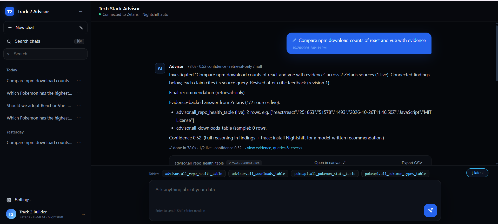
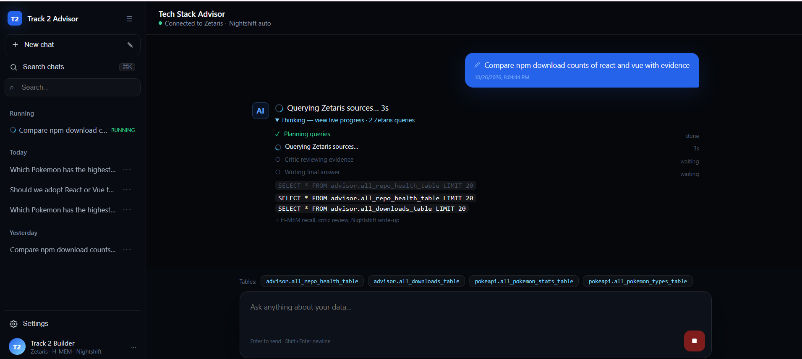
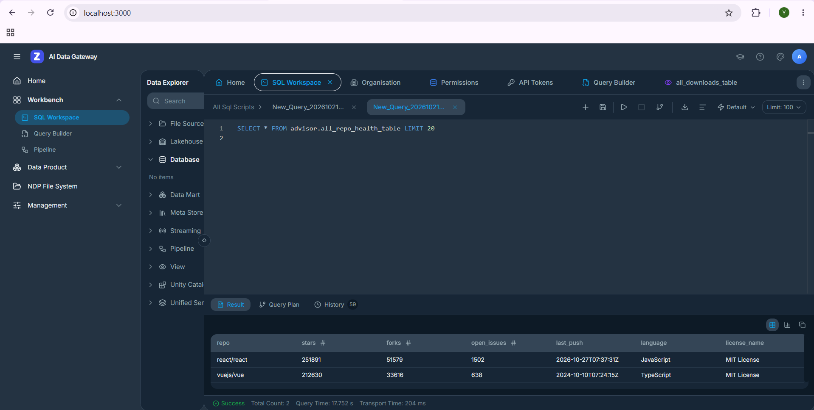
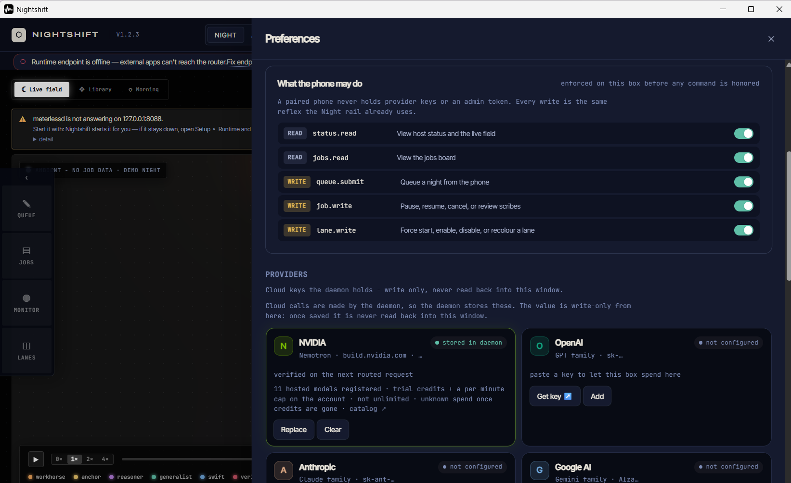

OPEN AGENT HACKATHON 2026 · TRACK 2
Tech Stack Advisor
Evidence-backed framework recommendations.
Should we adopt React or Vue? Answered with live data, not opinions.
Zetaris: liveMeterless H-MEM + NightshiftNVIDIA Nemotron
SPEAKER: 15 seconds. Name, track, one-liner. The question every tech lead asks, answered by an agent with citations.
1 · PROBLEM → SOLUTION
High-stakes guesswork → answer with receipts
Problem- Tech leads pick libs on blogs & vibes — wrong bet = months rewrite.
- Signals (stars, downloads, CVEs) live in 3+ places, go stale.
- Users: tech leads, CTOs deciding tonight.
SolutionPOST /run {"user_query": "React or Vue?"}→ ~6s → verdict + per-claim sources + confidence + what evidence does not cover.
Real run: React 251K★ / 123M dl vs Vue 212K★ / 11M — both tables cited.
SPEAKER: 30s. Pain left, solution right. Read the numbers — from a real run, not mock.
2 · AGENT ARCHITECTURE
Planner ↔ Executor ↔ Evaluator, with memory
↺ Critic rejects → revision (logged in trace) → H-MEM mines result for next run · every handoff → JSONL trace
SPEAKER: 30s. The loop is the point: the Critic sends weak evidence back for revision — that is what makes this not a pipeline. Walk left to right.
3 · HOW IT WORKS — UNIQUE
Two live sources, zero ETL + memory that compounds
Zetarisadvisor.all_repo_health_table — stars/forks/issues (~4s)advisor.all_downloads_table — npm weekly (~2s)- Unique: header-auth REST + flatten views; a 3rd framework is 2 lines.
Meterless- H-MEM: 每次Zetaris结果mine入库，下次recall (
Recalled N)。 - Nightshift:
meterless/auto → Nemotron 3.5 Lightning 30B，mode+model进trace。 - Critic的revision也进memory。
SPEAKER: 30s. Data left, memory plus model right. One line: evidence to memory to recommendation is a closed loop.
4 · STACK + PROOF
Small, boring, reproducible — see it
| Layer | Choice |
|---|
| Runtime | Node + tsx, server.ts POST /run |
| Data | Zetaris Docker: advisor.* |
| Memory/AI | H-MEM + Nightshift → Nemotron |
| Repro | npm i → setup → npx tsx server.ts |
Demo chat (real runs)


Zetaris SQL, 2 rows live

Nightshift Providers: NVIDIA stored

SPEAKER: 25s. Read the 3 reproduce commands off the table; every screenshot is a real artifact.
5 · FUTURE
Where this goes next — thank you
OSV vulnerabilities (needs POST adapter) + vuejs/core · Markovian shootouts · local lanes + rerank
Repo, traces (logs/*.jsonl), and this deck reproduce from clean clone.
SPEAKER: 15s. State limits honestly, then next steps. Total about 3 minutes. Press N for notes.
← → navigate · N notes ·